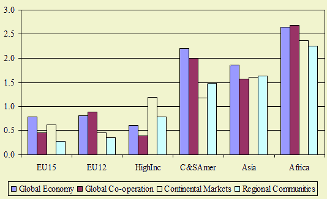
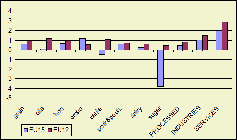
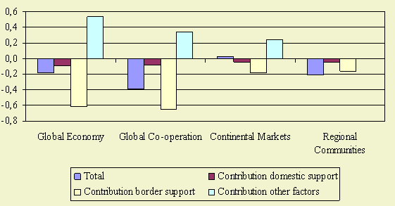
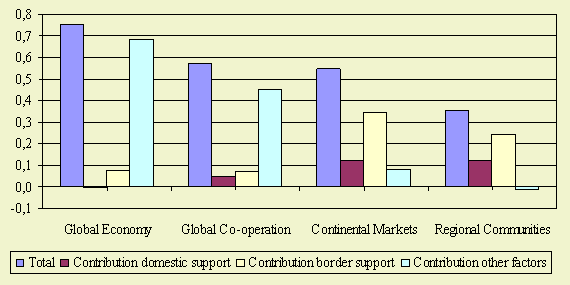

Highlights
Growth of crop production is relatively low in the EU25 countries in all scenarios.
Despite liberalisation the EU15 countries obtain the highest growth in the Global
economy scenario. For EU10 countries growth is highest in the Global Co-operation
scenario.
Production growth of protected products in the EU15 countries is lower than for other agricultural products. Reduction of border support has a higher negative effect than domestic support reduction. In EU12 the regionalization scenarios obtain relatively high growth rates for protected commodities due to enlargement.

Figure 1 - Growth in Crop Production, annual growth
rates, 2001-2030
Future developments
Crop production growth is low in the EU relative to other countries/continents.
Lower economic growth in combination with a low income elasticity are important
in this respect. In the Global scenario's (Global Economy, Global Cooperation) sugar production in the EU
will decline substantially (see next figure below). In the Global Cooperation and Regional Communities scenario's
crop production is relatively low due to lower demographic and economic growth
and less demand for fodder crops due to less meat consumption. These effects
are higher for the EU15 than for the EU10.
For countries outside the Transatlantic market in the Continental Markets scenario crop production
is lower than in other scenario's due to low economic growth and no enhanced
access to Transatlantic market.

Figure 2 - Growth in Production in EU12 and EU15 in
Global economy, annual growth rates, 2001-2030
Policy effects

Figure P3 - EU15 Production of Protected Products:
Total Effect and Contribution of Domestic and Border Support and other factors,
annual growth rates, 2001-2030
This Figure describes EU15 production growth for protected under CAP
(grains, oilseeds, sugar, beef and dairy). For protected products we give the
total production effect which is the result of all scenario's assumptions. Furthermore,
the isolated contribution of changes in border support, domestic support and
all other factors are depicted.
Production growth of products with protection of CAP is lower than for other
agricultural products in all scenarios. Reduction of border support has a significant
negative impact in the global scenario's (Global Economy and Global Cooperation) where all border support
is abolished. The impact is less severe in the Regional Communities scenario where all export
subsidies are abolished. However, the reduction of output for protected commodities
in Regional Communities can largely be explained by the reduction of border support because there
is no ofsetting impact of high income growth.

Figure 4 - The impact of reduction of border support
and domestic support has a small positive impact on the production of not protected
commodities (not shown in Figure).
EU12 Production of Protected Products: Total Effect and Contribution of Domestic
and Border Support and other factors, annual growth rates, 2001-2030
This Figure describes EU12 production growth for protected products under CAP
(grains, oilseeds, sugar, beef and dairy). For protected products we give the
total production effect which is the result of all scenario's assumptions. Furthermore,
the isolated contribution of changes in border support, domestic support and
all other factors are depicted.
Accession to the European Union has a positive impact on the production of protected
commodities in the EU12, especially in Continental Markets and Regional Communities scenarios. In these scenarios
production growth of protected products is higher than for non protected products.
The impact of changes in border and domestic support is relatively limited in
the liberalisation scenarios compared to the impact in the EU15 (see, Figure
P3).
For the regionalisation scenarios (Continental Markets and Regional Communities) the impact of changes in border
and domestic support is more important. Benenefits of accession to the EU15
are less eroded by liberalisation. CAP payments are not reduced or even increased
(Regional Communities) and access of other countries to the EU is not enhanced.
Most important drivers
Macro-economic growth and border support (especially import tariffs)